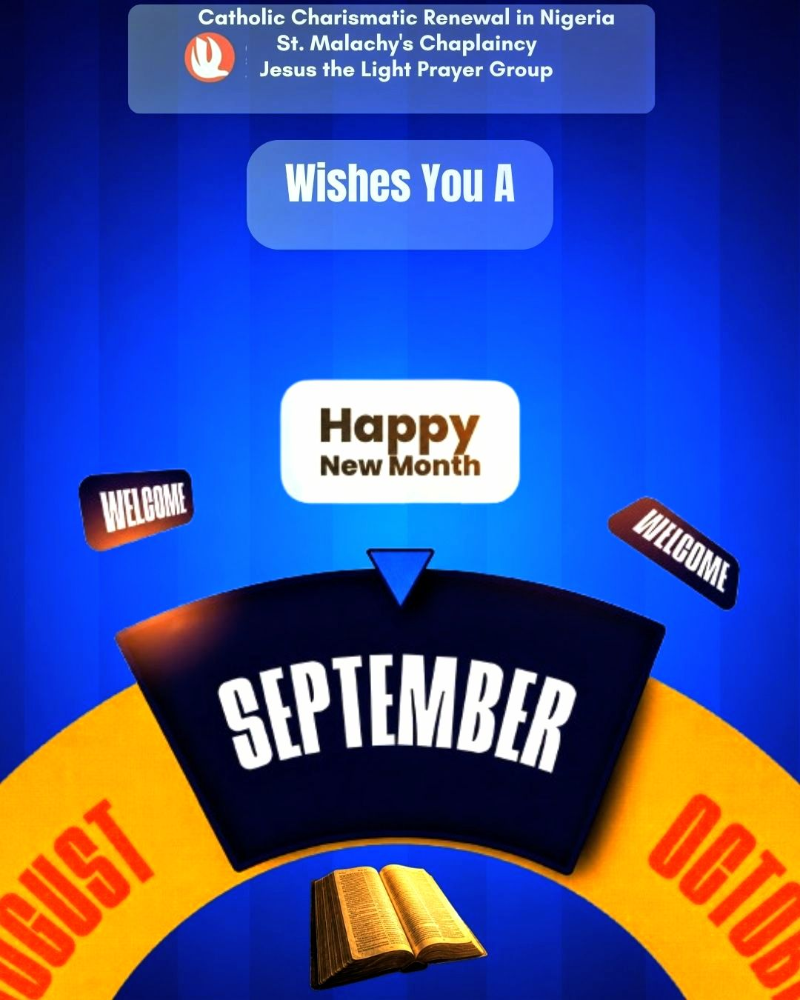
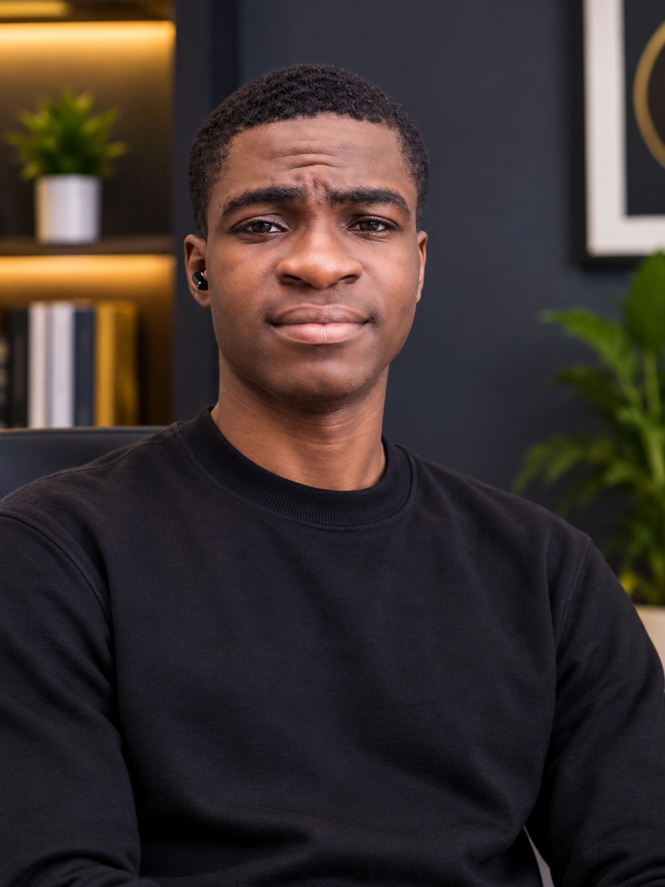
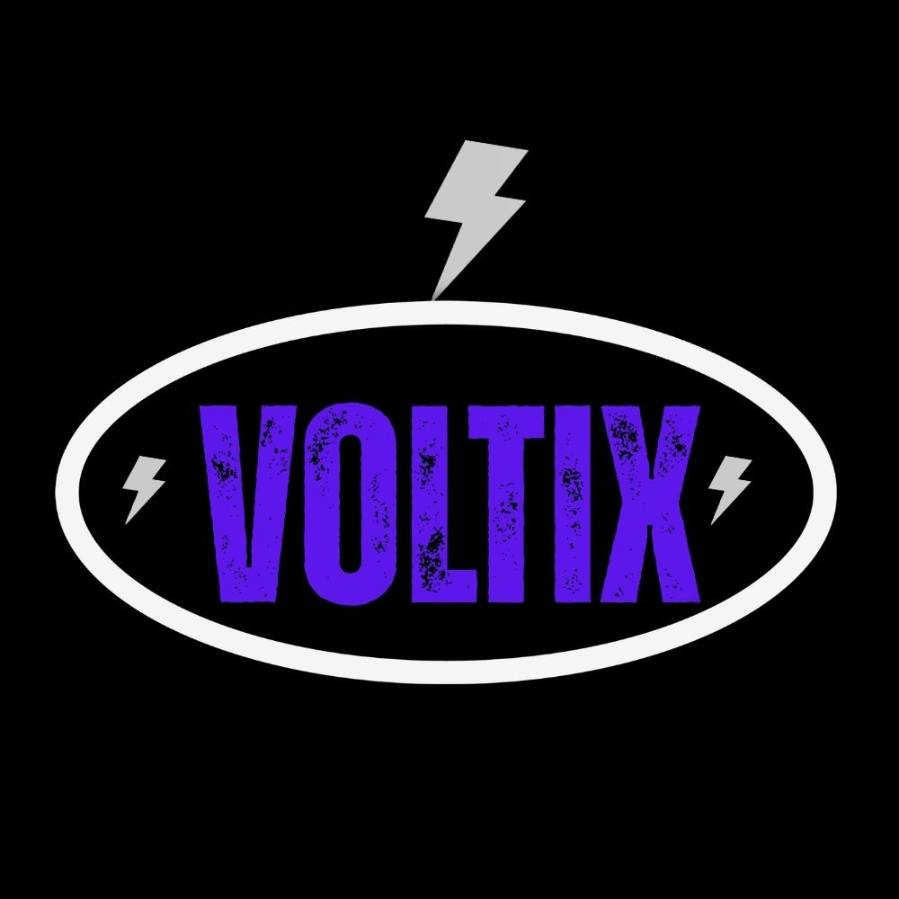
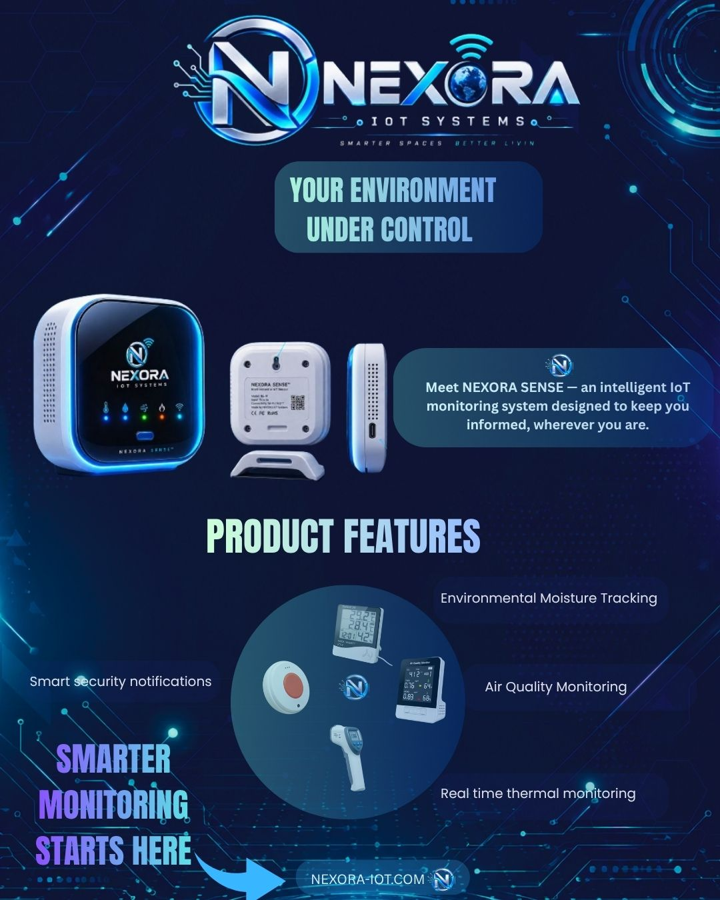
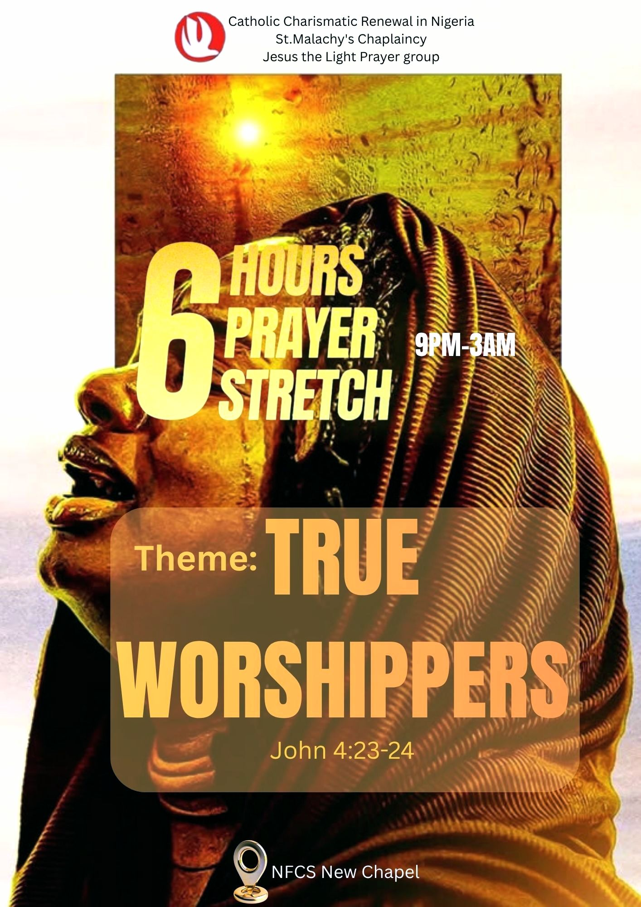
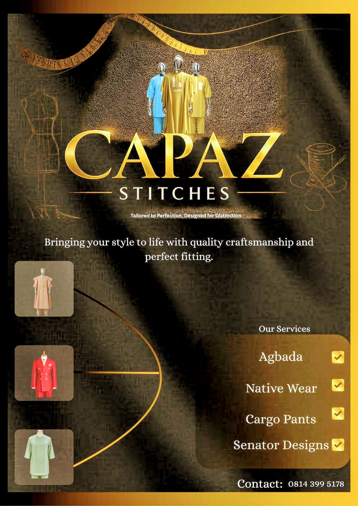

01September
Happy New Month
DESIGN · RESEARCH · TECHNOLOGY
I am LCD Graphics — a graphic designer, researcher and multidisciplinary learner combining creativity, technology and research to create meaningful digital and visual experiences.

Designer · Researcher · Learner
01 — SELECTED WORK
A selection of visual identities, campaigns and creative projects developed across different industries and communities.

01Happy New Month

02Solar Charging Firm

03IoT Brand

04Church Prayer Program

05Fashion Design Brand
I am LCD Graphics — a multidisciplinary creative working across graphic design, research and technology.
I create visual identities, digital graphics and creative experiences that help ideas communicate clearly and effectively.
Beyond design, I am constantly learning and exploring different fields, from technology and engineering to research, education and digital experiences.
My approach is simple: understand the problem, research deeply, think creatively, and build something meaningful.
A growing combination of creative, technical and research-driven skills.
Visual identities, social media graphics, flyers, posters and creative campaigns.
Logos, visual systems and brand direction for businesses and creative projects.
Research, information gathering, analysis and communicating ideas clearly.
Exploring web development, digital products, PWAs and technology-driven experiences.
I explore ideas beyond design, combining research, technology and continuous learning to understand how things work and how they can be improved.
Exploring web development, digital products, PWAs, software and emerging technologies.
Learning across engineering, electronics, telecommunications and technology systems.
Investigating ideas, gathering information, analysing problems and turning findings into understandable insights.
Studying new subjects, developing practical skills and continuously expanding my knowledge.
Every project starts with understanding the problem and ends with creating something purposeful.
I first understand the idea, audience, objectives and problem that needs to be solved.
I gather information, study references and explore different possibilities before creating.
I turn the research and ideas into visual, digital or creative solutions.
I review the work, improve the details and make sure the final result communicates clearly.
Have a project, idea or opportunity? I'd love to hear from you.
WhatsApp +234 916 591 2039 ↗ Email Chukwuemelieogu321@gmail.com ↗